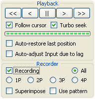

Традиционный ТАСинг

Этот метод по форме похож на простое прохождение видеоигр, однако имеет совершенно иное содержание и требует иного образа мышления.
Редактирование Ввода здесь осуществляется с помощью записи нового Ввода поверх имеющегося.
Для переключения между просмотром и редактированием мувика необходимо включать и выключать режим Записи (клавиша Q по умолчанию). Рекомендуется установить галочку "Follow cursor", чтобы наблюдать записываемый Ввод в Piano Roll.
Основное занятие:
Когда вы просто записываете пробное прохождение игры (то есть играете с сэйвами, но без шлифовки) вы делаете только шаги 3 – 5. При этом вам сгодится любое успешное прохождение участка, так что при первом же наступлении целевого события вы сразу переходите к следующему участку. В таком прохождении вы сохраняетесь только ради быстрой навигации в случае фатальной ошибки (например, не успел нажать кнопку A и упал в яму), так как вы не хотите переписывать Ввод с самого начала игры.
Ну а во время серьёзной записи ТАСа необходимо перепробовать множество различных подходов, чтобы в итоге выбрать самый лучший. Поэтому необходимо многократно повторить шаги 2 – 8, пока не возникнет чувство, что участок пройден идеально. Шаги 6 – 9 отличают ТАСинг от казуальной игры с сэйвами.
Процесс Записи Ввода (шаг 4) представляет собой редактирование Ввода прямо во время просмотра результатов. То есть просматривая состояние игры на кадр 200, вы готовите Ввод для кадра 201 (кладёте пальцы на нужные кнопки), а затем передаёте этот Ввод в игру с помощью Frame Advance и сразу же видите результат – состояние игры на кадр 201 (это если ориентироваться по состоянию оперативной памяти, а изображение на экране игры всегда отстаёт ещё на 1 кадр). Полученный результат обычно является лишь промежуточным, то есть его можно использовать для оценки своего прогресса (на шаге 5), но нельзя использовать для сравнения прошлого и текущего подхода к прохождению участка (на шаге 7). То есть не нужно применять критерий оптимальности после каждого кадра. Даже если в начале участка вы обгоняете прошлый подход, где-нибудь в середине вы можете отстать. Только при достижении конца участка (шаг 6) у вас появляется объективная основа для сравнений различных подходов.
Больше всего времени в этом цикле занимают шаги 3 и 4. Зачастую, прежде чем дойти до целевого события, требуется повторить шаги 3, 4 и 5 несколько раз подряд, записывая и отбраковывая решения, ошибочность которых очевидна даже без сравнений с прошлыми подходами. Например, если вашего персонажа посреди разбега убивает враг, то сразу понятно, что далее вводить кнопки разбега быссмысленно, нужно откатиться назад и переписать Ввод так, чтобы враг промахнулся. В особо напряжённых ситуациях лучше даже разбить текущий участок на подучастки (до и после взаимодействия с врагом), чтобы оптимизировать их по отдельности. Иначе вы устанете уже после завершения первого подхода и не захотите больше работать с этим участком игры. Свои силы тоже нужно расходовать оптимально!
Так как редактирование Ввода в этом методе осуществляется с помощью Курсора Проигрывателя (а не с помощью курсора мыши), то для эффективной работы необходимо научиться быстро доставлять голубой курсор к любому нужному кадру. По мере наработки опыта ТАСеры приучаются "жонглировать" Закладками на уровне моторной памяти. Они машинально создают промежуточные и вспомогательные Закладки во время записи Ввода, и зачастую не глядя находят нужный слот.
Эта виртуозность приходит со временем, обычно уже после завершения парочки ТАСов. Вырабатываются определённые привычки, один палец прирастает к клавише Frame Advance, логически распределяются типовые обязанности между десятью слотами Закладок, чтобы в нужные моменты пальцы сами тянулись к нужным клавишам. Например, у некоторых ТАСеров слоты распределяются так:

Этот навык во многом похож на навык игры на музыкальном инструменте. Чем быстрее вы его выработаете, тем лучше, ведь пока вы его не освоили, традиционный процесс ТАСинга будет казаться вам слишком утомительным. Из-за этого многие люди считают порог вхождения слишком высоким. Зато тем, кто освоился с техникой скоростного использования сэйвов, остальные премудрости ТАСинга даются легче.
Впрочем, теперь есть Тасэдитор. Он отменяет необходимость тренировки пальцев, давая возможность быстрой навигации по мувику без Закладок. И приучаться к постоянному сохранению в F1 больше не нужно, так как есть Журнал Истории. Так что, в принципе, вы можете забыть о традиционном методе и сразу же начать редактирование мувика и тестирование подходов с помощью нелинейного метода ТАСинга.
Тасэдитор также расширяет возможности традиционного метода:
Плюсы метода:
+ Процесс интуитивно понятен любому геймеру.
+ Постоянная отдача позволяет адаптироваться к игре на ходу, корректировать свои решения и преждевременно отсекать в уме ошибочные подходы.
+ Границы текущего участка всегда отмечаются с помощью Закладок (ради навигации), тем самым приучая ТАСера к порядку (который ещё пригодится).
Минусы метода:
– Настойчивая игровая отдача провоцирует ТАСера отсекать некоторые нелогичные, но потенциально выигрышные подходы.
– Медленная навигация может отвлечь от мысли и повысить утомляемость.
– Так как количество Закладок ограничено, отметка прошлых участков теряется при создании нового участка, так что требуется выписывать некоторые вещи в текстовый файл.
Когда рекомендуется использовать: никогда. Можно воспользоваться Записью при первом пробном прохождении участка (или всей игры), когда не важна точность. А в отшлифовке Ввода этот метод значительно уступает остальным. Тем не менее, имеет смысл освоить этот метод, так как инструменты для его применения есть во многих современных эмуляторах, а Тасэдитор пока есть только в FCEUX.
Следующий метод эффективнее, но на нормальное прохождение игр он похож ещё меньше.
Created with the Personal Edition of HelpNDoc: Easily create CHM Help documents